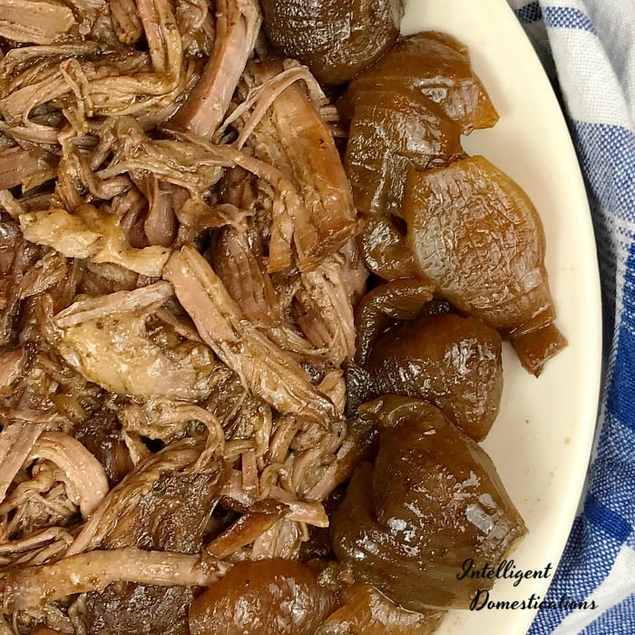

Georgia Pot Roast

Description
A take on the famous Mississippi pot roast using onions in place of the pepperoncini
Ingredients
- 1 chuck roast about 3lbs
- 1 single packet of ranch dressing mix
- 1 single packet of au jus gravy mix
- 1 small bag of red pearl onions (skins removed)
Steps
- Rinse your roast under cool running water, pat dry and place in the crockpot. Disposable liners work great for making clean up a breeze
- Peel the skins from the little pearl onions and set aside
- Sprinkle each packet of seasoning onto the top of the roast. No need to mix them together first, just sprinkle one on top of the other and it doesn't matter which goes first.
- Place the onions around the edges of the roast and cover the Crockpot with the lid.
- Turn Crockpot on Low and cook for about 8 hours. Cook time depends on the size of roast and how fast your Crockpot cooks. Use a meat thermometer to test for doneness.